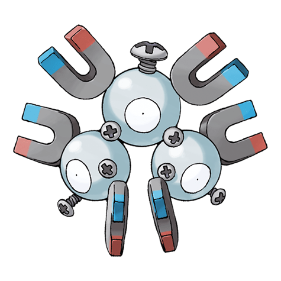

Назад
Магнетон

Магнетон — Покемон 1 поколения под номером 82 в Покедекс. Обитает он в регионе Канто и относится к электрическому и Стальному типу. Магнетон излучает мощную магнитную силу, способную сломать любые механические устройства. В результате крупные города оповещаются сиренами, предупреждающими о масштабном нашествии этого Покемона.
Тип:
Стальной
Электрический
Эволюция
# 082 Магнетон
Финальная стадия